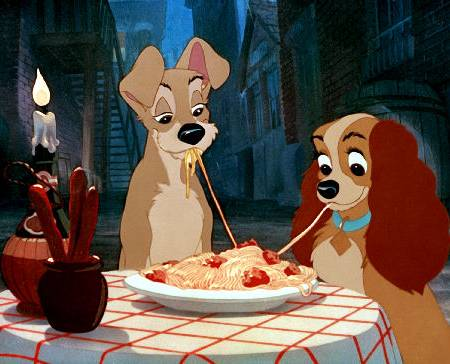

Home
Spaghetti
Source: Disney Food Blog, Lady and the Tramp Spaghetti and Meatballs Recipe

Description
Spaghetti from Lady and the tramp
Ingredients
Serves: 5 (serving size: 5 meatballs, 1/2 cup sauce, 1 cup pasta, 1 tablespoon cheese, and tablespoon basil)
- 1 pound ground sirloin
- 1/4 cup minced fresh onion
- 2 tablespoons dry breadcrumbs
- 1/4 teaspoon garlic salt
- 1/4 teaspoon pepper
- 1 large egg white, lightly beaten
- 1 (25.5-ounce) jar fat-free tomato-and-basil pasta sauce, divided
- Cooking spray
- 5 cups hot cooked spaghetti (about 8 ounces uncooked pasta)
- 5 tablespoons grated Parmesan cheese
- 5 tablespoons chopped fresh basil
Steps
- Combine the first 6 ingredients and 2 tablespoons of pasta sauce in a medium bowl
- Shape the meat mixture into 25 (1-inch) meatballs
- Place a large nonstick skillet coated with cooking spray over medium heat until hot
- Add the meatballs, and cook 6 minutes, browning on all sides
- Stir in remaining pasta sauce
- Cover, reduce heat, and simmer 10 minutes or until the meatballs are done, stirring occasionally
- Serve the meatballs over spaghetti, and sprinkle with Parmesan cheese and fresh basil